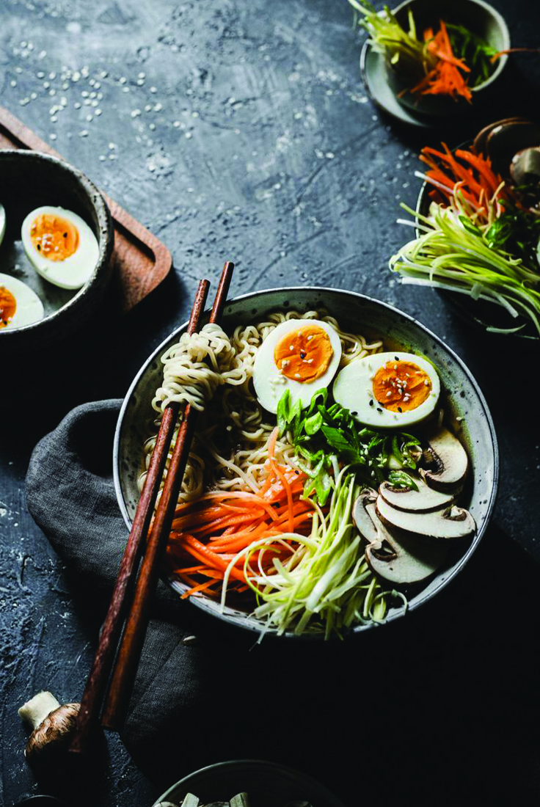

Ramen is a noodle soup that was brought to Japan from China. Can have multiple variations depending on where
is made or
what kind of noodles are used and has different broths and toppings.
This one is a easy ramen soup that only takes 15 minutes to make it. A beautiful deep miso flavor with some
fresh vegetables that can be made by anyone!
Ingredients
Broth
4 cups of vegetable broth or you can make your own
2 tbsp miso paste
3 cloves of garlic
1 tbsp of soy sauce low in salt
1 small root of ginger
1 tbsp of sesame seed oil
Toppings
5 shitake mushrooms or any mushrooms you have available
1 stripes chopped carrot
1 small portion of leek
1 cooked egg
Sesame seeds
Some tofu if you want
Some onion leafs
Choose the noodles you want
Steps
Broth
Finely chop garlic and ginger
Heat a skillet over high heat. Add sesame seed oil and quickly fry garlic and ginger for about 30
seconds to a minute
Add miso paste and soy sauce and mix well
Add vegetable broth and bring to a boil. Cook for another 2-3 minutes
Finishing
Cut carrots and leeks into strips
Soak shitake mushrooms in water for 1 day if they dry, if fresh roast over high heat for about a minute
or two. Or you can eat them raw
Cook the noodles right before serving
Place noodles into a bowl
Pour over the broth
Add the toppings
Sprinkle with some sesame seeds and some onion leafs